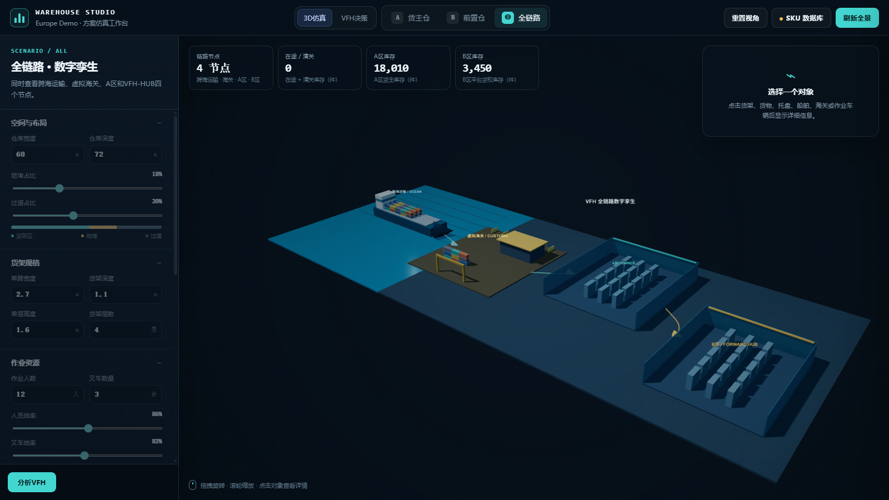
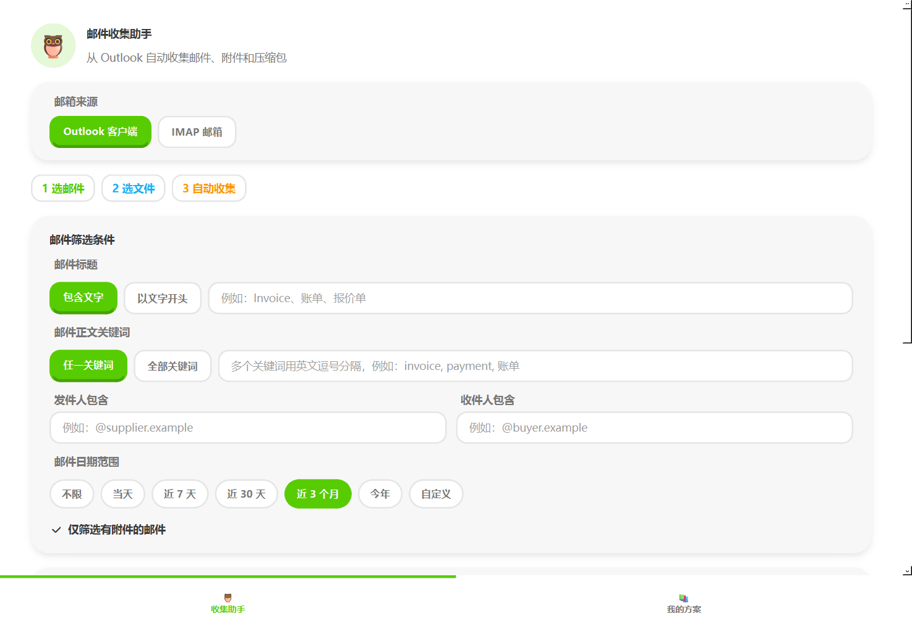

物流建模
库存、库容、人效、运输、批次库龄与成本边界。
LOGISTICS · SIMULATION · AUTOMATION
我关注海外仓规划、物流仿真、数字孪生和办公自动化。通过 Python、Web 3D 与数据模型，把成本、产能、库存和流程问题转化为可以验证的决策工具。
01 / ABOUT
我擅长先梳理业务规则，再把它们转化为数据结构、仿真过程和可视化界面。相比只做静态分析，我更关注工具能否让使用者调整参数、比较方案并理解结果。
当前作品集中包含海外仓数字孪生与决策模型，以及 Outlook / IMAP 邮件自动收集工具。公开仓库均使用合成数据和示例账号，完整业务数据保持私有。
02 / CAPABILITIES
从业务规则、算法模型，到可以演示和操作的最终产品。
库存、库容、人效、运输、批次库龄与成本边界。
让模型成为可编辑、可运行、可复核的应用。
减少重复操作，并为业务决策提供结构化辅助。
03 / SELECTED WORK
公开版本全部经过脱敏，可直接用于简历和技术交流。

把海运在途、虚拟海关、A/B 仓转运、SKU 打托、批次库龄和成本模型放在同一个交互式系统中，支持建仓、面积、人力和爆仓风险分析。

面向重复性办公任务的 Windows 桌面工具，支持 Outlook 与 IMAP、多条件筛选、附件导出、自动解压、方案复用和定时执行。
04 / CONTACT
如果你关注供应链、物流数字化、业务仿真或自动化工具，欢迎通过 GitHub 查看代码和项目说明。
在 GitHub 找到我 ↗